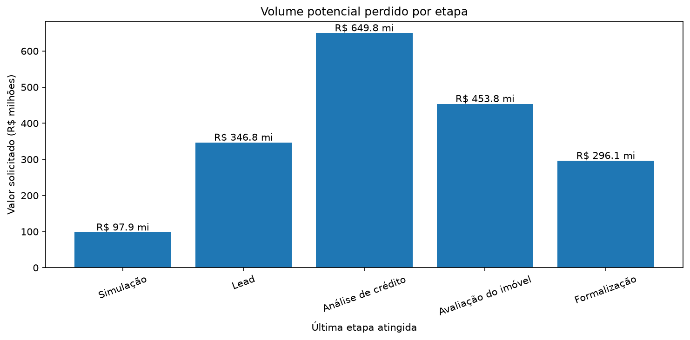
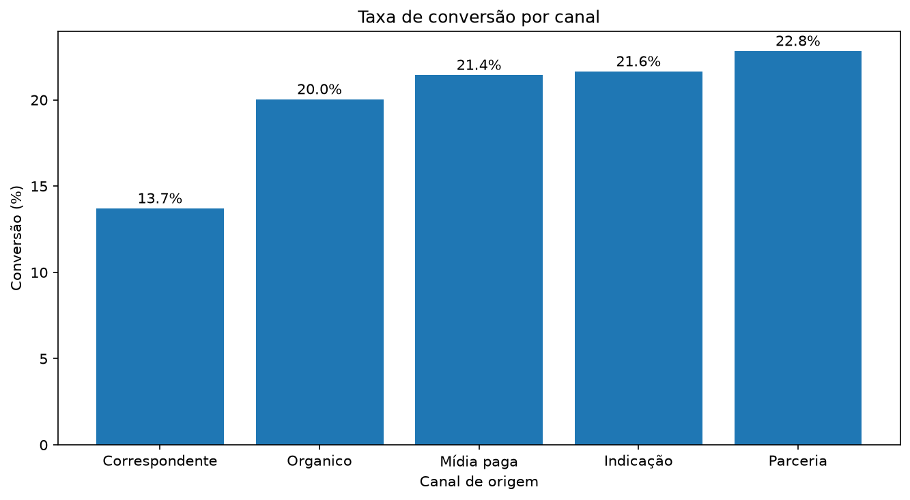
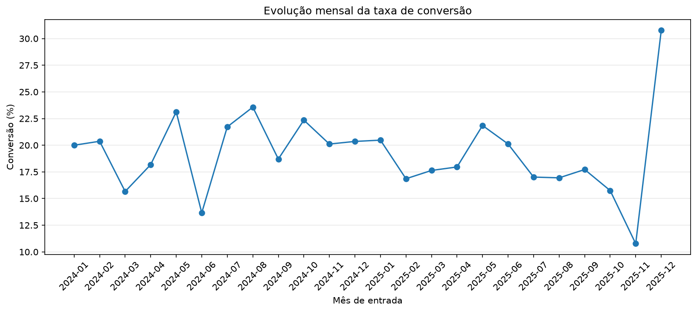

Período analisado: 11/01/2024 a 29/12/2025
O valor apresentado representa o volume solicitado das propostas que não chegaram à contratação, e não receita ou lucro perdido pelo Bari.

| Etapa | Propostas perdidas | Volume potencial perdido | % do volume perdido |
|---|---|---|---|
| Simulação | 256 | R$ 97,9 mi | 5.3% |
| Lead | 909 | R$ 346,8 mi | 18.8% |
| Análise de crédito | 1657 | R$ 649,8 mi | 35.2% |
| Avaliação do imóvel | 1151 | R$ 453,8 mi | 24.6% |
| Formalização | 764 | R$ 296,1 mi | 16.1% |

| Canal | Propostas | Contratadas | Conversão | Conversão em volume |
|---|---|---|---|---|
| Parceria | 889 | 203 | 22.8% | 21.6% |
| Indicação | 910 | 197 | 21.6% | 20.8% |
| Mídia paga | 1166 | 250 | 21.4% | 20.8% |
| Organico | 1273 | 255 | 20.0% | 20.3% |
| Correspondente | 1627 | 223 | 13.7% | 12.3% |

| Motivo | Propostas | Volume potencial perdido |
|---|---|---|
| Sem retorno | 1495 | R$ 575,1 mi |
| Desistiu | 1392 | R$ 550,6 mi |
| Reprovada crédito | 844 | R$ 325,0 mi |
| Problema garantia | 608 | R$ 241,1 mi |
| Documentação pendente | 398 | R$ 152,6 mi |
Os alertas acima não significam que os registros foram automaticamente removidos. Situações sem correção evidente foram preservadas para evitar alterações arbitrárias nos dados.
Fonte:
elaboração própria a partir do arquivo
propostas_credito.csv
fornecido no desafio prático.
Valores financeiros utilizam o valor solicitado
como proxy de volume potencial.